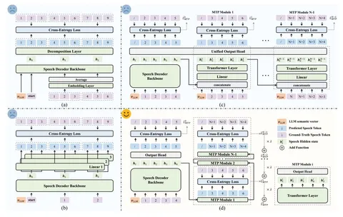

Multi-Token Prediction часто рассматривают как способ ускорить генерацию, но кроме этого он может улучшить её качество. Сегодня разберём статью о том, как и почему такой подход одинаково хорошо работает и для LLM, и для аудиомоделей. Для этого упомянём ещё три работы — но обо всём по порядку.
Better & Faster Large Language Models via Multi-token Prediction
Начнём с простого: вспомним, как работает multi-token prediction (MTP). Cамая популярная и цитируемая статья на эту тему вышла в 2024 году.
Её идея очень проста: навесить на тушку (shared) не одну голову (linear-слой), которая предсказывает один токен, а сразу несколько. То есть по первому токену будет генерироваться не второй, а сразу четыре: второй, третий, четвёртый и пятый.
Для реализации авторы использовали self-speculative decoding: выбирали предсказания только с самыми высокими вероятностями. По результатам на бенчмарке MBPP и проверки людьми обнаружилось, что MTP может не только ускорить работу модели, но и улучшить её результаты.
При этом чем больше модель, тем сильнее улучшается качество. Но это работает только на сложных задачах, таких как кодинг. Для trivia-вопросов, которые предполагают односложный ответ (да или нет) не нужно генерить много токенов наперёд.
Так MTP начали использовать не только как ускоритель, но и как auxilary objective для улучшения качества.
DeepSeek-V3 Technical Report
Авторы немного видоизменили MTP: сделали его не параллельным, а последовательным. Во время обучения добавили hidden-слой перед каждой головой-трансформером и конкатенировали его токены с токенами ground truth, уже предсказанными предыдущей головой. На инференсе использовали обычный MTP с уменьшенными трансформерами — и тоже добились не только ускорения, но и повышения качества результатов.
Так как же это всё применимо к TTS?
VocalNet: Speech LLM with Multi-Token Prediction for Faster and High-Quality Generation
Короткий ответ: хорошо, даже очень.
VocalNet — не совсем TTS, скорее, заалайненная омни-модель. Сетап максимально базовый: претрейн-тушка с приклеенным Whisper-энкодером, который делает аудиоэмбеддинги. Сверху — Speech Vocoder, генерирующий аудиотокены. Потом аудиотокены отправляются в инференс.
Классика, но есть нюанс: Speech Decoder. Именно в него внедрили MTP.
Секрет успеха MTP применительно к задачам генерации речи в соотношении размеров фонемы и токена. Для обычной LLM токен — большая семантическая единица. А при генерации речи в одну фонему входит сразу несколько токенов. И тем, кто занимается TTS, очень хотелось бы научить модели предсказывать не токены, а целые фонемы.
На схеме выше — все подходы, которые перепробовали авторы VocalNet:
(a) — уменьшить размерность и предсказывать по три, а не по четыре токена подряд,
(b) — использовать несколько параллельных линейных голов, как в классическом MTP,
(c) — внедрить головы последовательно, как сделала команда DeepSeek,
(d) — попробовать по-своему: перенять лучшее у DeepSeek, но отказаться от GT, как в MTP. То есть, не спойлерить во время обучения токены, которые должна предсказать нейросеть.
Подход (d) позволил авторам удалось добиться существенного ускорения работы VocalNet, при этом не ухудшив качество.
Predicting the Order of Upcoming Tokens Improves Language Modeling
MTP не всемогущ. Чем больше токенов одновременно генерирует модель, тем нестабильнее objective — уже к 3-5 токену маленькие ошибки приводят к большим лоссам.
Авторы этой статьи предлагают сгладить лосс с помощью auxilary objective: вместо самих токенов предсказывать их порядок. Протестировать метод можно на GitHub.
Александр Цапков
